Pets offer quiet, non-task-oriented comfort.
Distance breaks it.
Professionals lack space for psychological recovery. Pets fill that gap — quietly, without demand.
Higher interaction frequency → stronger mood improvement. Presence alone creates stability.
Existing products track, feed, and watch. None restore the feeling of being accompanied.
How do we establish a remote yet authentic connection — weakly present, yet emotionally effective?
From exhausted to connected.
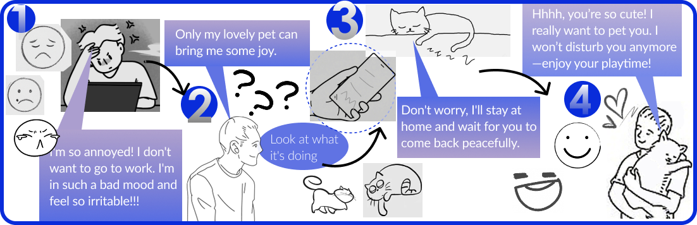
"I'm so annoyed. I don't want to go to work. I'm in such a bad mood."
"Only my lovely pet can bring me some joy. I want to check what it's doing."
"Don't worry. I'll stay at home and wait for you to come back peacefully."
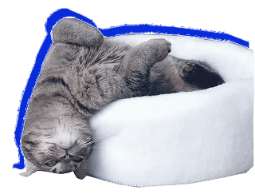
"Hhhh, alright... It really feels a bit more relaxed."
Three modules. One calm moment.
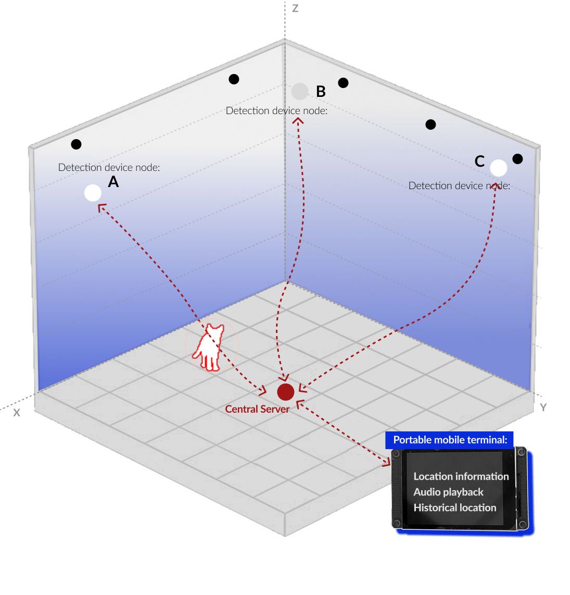
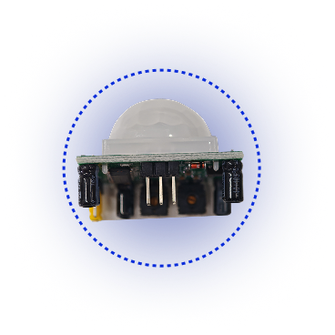
HC-SR501 Infrared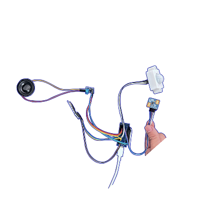
Detection Node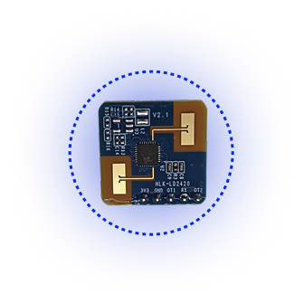
LD2420 Radar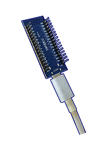
ESP32-C3 Server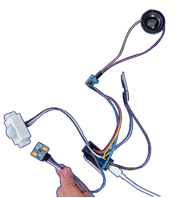
Gateway Board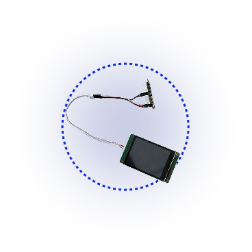
Info Display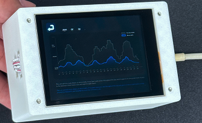
Terminal UnitHardware that makes the experience real.
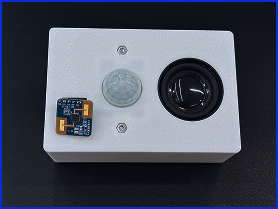
Final Assembly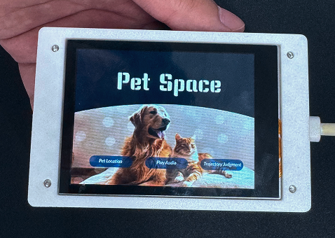
Display Terminal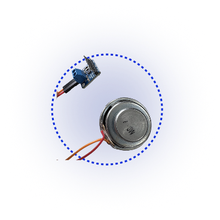
MAX98357A AmplifierResearch, systems thinking, and making — together.
Reflection
The system deliberately reports presence, not footage — distributed infrared and radar sensing means a pet owner feels their pet is there without a camera pointed at the animal, or at their own home. That restraint is the design; whether it's still reassuring enough in practice is the open question.
What Held Up
- Distributed sensing (infrared + radar) confirms a pet's presence without a camera feed — companionship without surveillance
- The storyboard arc — low mood → reach for the terminal → ambient reassurance → reset — kept the design anchored to an emotional beat, not a feature list
- Calm Technology as a framework meant the terminal deliberately avoids a screen full of live data — presence, not a dashboard
What I'd Push On Next
- The "0 products for companionship" research finding is worth stress-testing against a wider pet-monitoring market, not just the products compared here
- Test with actual burnt-out pet owners across a real workday, not a scripted storyboard, to see if ambient audio reduces anxiety or just adds noise
- The system currently reports presence vs. absence — explore whether finer signals (moving vs. resting) make the reassurance stronger without tipping back into surveillance